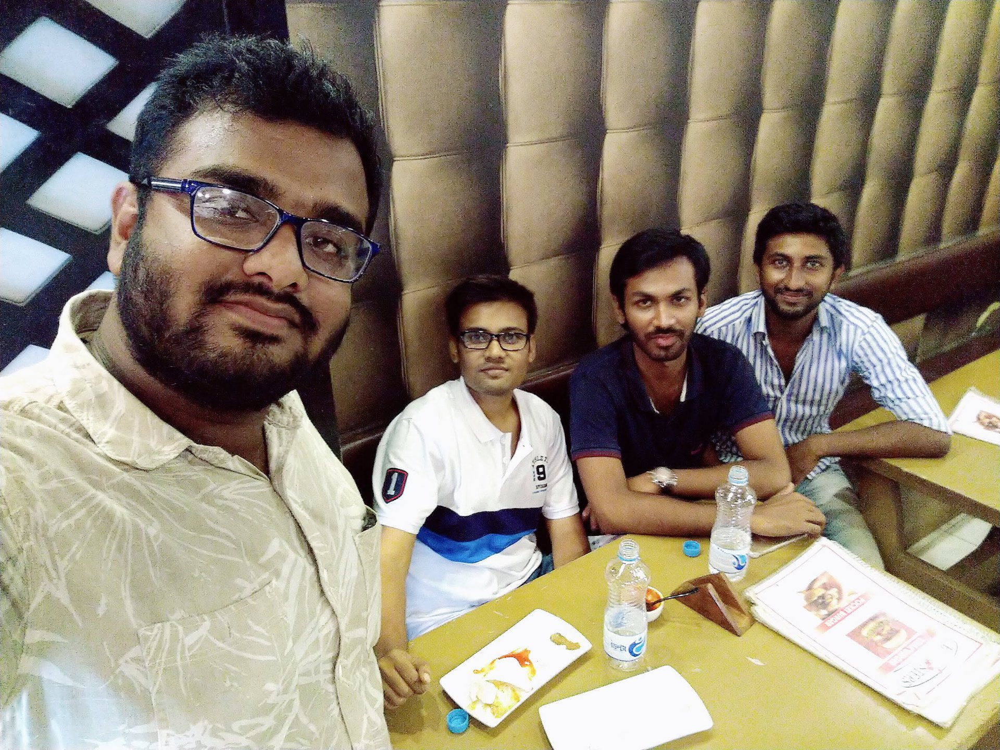
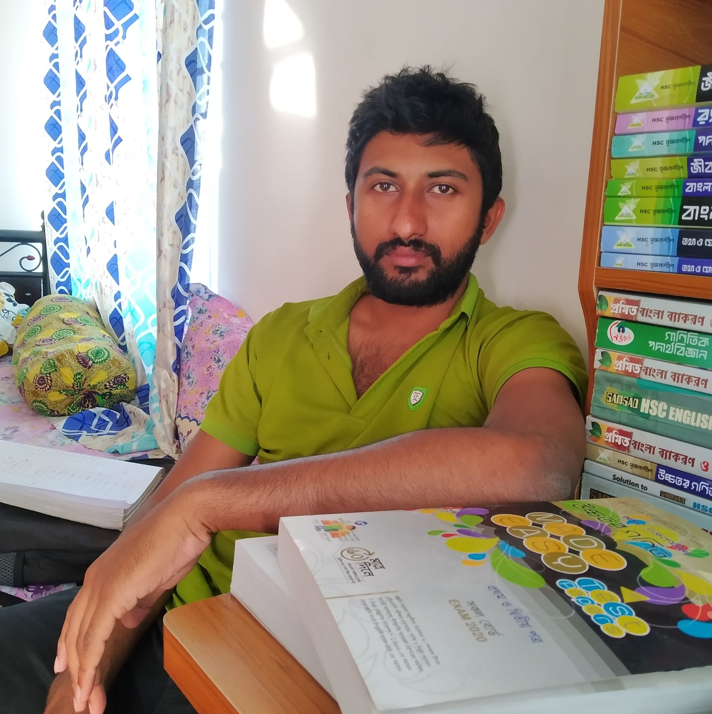
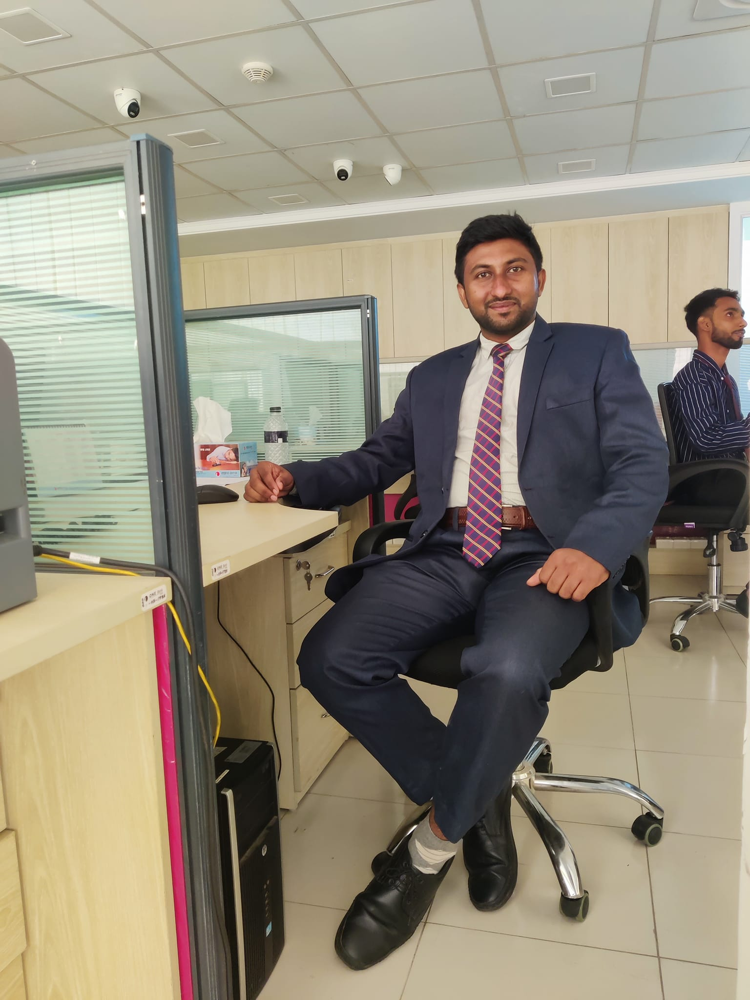
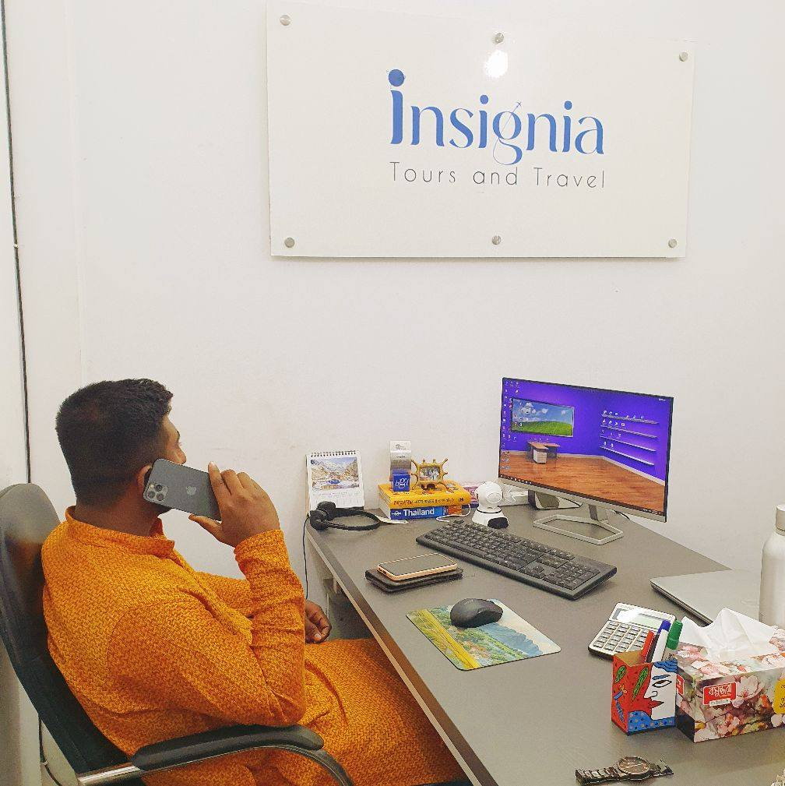

In 2018, I launched my own business named ArotDar.com. It was built around a modern and practical business concept. However, during the COVID-19 pandemic in 2020, the business faced unexpected challenges. Due to economic pressure and the rise of similar competitive platforms, it became difficult to continue operations.
Although the journey paused, the experience strengthened my entrepreneurial mindset and taught me resilience, strategic thinking, and adaptability in business.

Since January 6, 2017, I have been working as a private tutor, teaching Secondary and Higher Secondary level students.
Teaching is not just a profession for me — it is my passion. I believe education is the foundation of character, career, and humanity. Guiding students and contributing to their academic and moral growth gives me immense satisfaction.

From 2020 to 2023, I worked remotely with CNI – Creative News International. This experience allowed me to expand my professional exposure, improve communication skills, and adapt to digital work environments.
In 2024, from July to September, I served at the Head Office of One Bank PLC. Working in a structured corporate environment enhanced my professional discipline, responsibility, and organizational understanding.

I have been remotely associated with Insignia Tours and Travel since 2019. In October 2024, I officially took permanent responsibility as Executive Manager (EM).
This role connects directly with my passion for travel, cultural understanding, and international exposure. Managing travel services for foreigners visiting Bangladesh allows me to contribute to promoting the country's beauty, heritage, and hospitality.
Alongside this professional responsibility, I continue my tutoring career — my lifelong passion.
